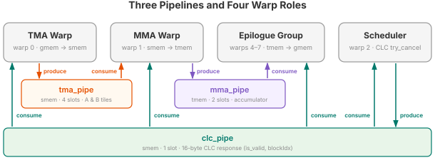
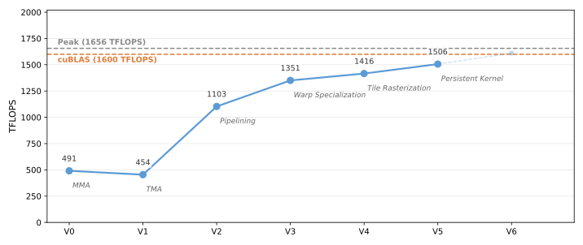

5. CLC Persistent Kernel and Pipelined Epilogue¶
Our goal throughout this tutorial series has been to keep the tensor core pipeline busy. V4 does this well within a single tile — TMA and MMA run on separate warps, and multiple MMAs are in flight. But zoom out to the full kernel, and the tensor core is idle for significant stretches.
Each CTA has a prologue (allocate register file, shared memory, and tensor memory; initialize pipelines and barriers) and an epilogue (read the accumulator from tensor memory and write the result to global memory). Both sit on the critical path, and the tensor core does nothing during either phase. Making matters worse, efficient tensor core utilization requires large tile sizes, which means we typically launch only one CTA per SM — there is no other CTA on the same SM to fill the gap while the first one is setting up or writing back.
The question is: how do we keep the tensor core pipeline busy while moving the prologue and epilogue off the critical path?
Blackwell introduces Cluster Launch Control (CLC), a hardware mechanism that
lets a running CTA cancel an unscheduled thread block cluster and take over
its work. The kernel launches the full grid (one cluster per output tile), but
instead of each CTA computing one tile and exiting, a CTA that finishes its MMA
computation can immediately cancel a pending cluster, obtain the cancelled
cluster’s blockIdx, and start computing the next tile — all without
tearing down and reallocating resources. The prologue cost is paid once; every
subsequent tile reuses the already-allocated register file, shared memory, and
tensor memory. As a bonus, CLC naturally load-balances across SMs: faster SMs
cancel more clusters and process more tiles, avoiding the tail effect when the
grid is not evenly divisible by the number of SMs.
CLC also solves the epilogue problem. Because the CTA stays alive across tiles, we can hand the epilogue to a dedicated warp group that writes tile N’s results to global memory while the MMA warp has already moved on to tile N+1’s computation. The tensor core never stalls waiting for the epilogue to finish.
This tutorial covers the two optimizations in turn:
CLC persistent kernel — how to use Blackwell’s cluster launch control to cancel a pending cluster, obtain the next tile assignment, and loop.
Pipelined epilogue — how to add a dedicated epilogue warp group so that epilogue and MMA overlap across tiles.
The Full Kernel¶
class Pipeline(tilus.Class): # same as V4
def __init__(
self,
num_stages: int,
producer_arrive_count: int = 1,
consumer_arrive_count: int = 1,
):
self.num_stages: int = num_stages
self.empty_barriers = self.mbarrier.alloc(
[consumer_arrive_count for _ in range(num_stages)]
)
self.full_barriers = self.mbarrier.alloc(
[producer_arrive_count for _ in range(num_stages)]
)
self.producer_stage: int32 = 0
self.consumer_stage: int32 = 0
self.producer_phase: uint32 = self.mbarrier.producer_initial_phase
self.consumer_phase: uint32 = self.mbarrier.consumer_initial_phase
def producer_acquire(self):
self.mbarrier.wait(
barrier=self.empty_barriers[self.producer_stage],
phase=self.producer_phase,
sem="relaxed",
scope="cta",
)
def producer_barrier(self) -> RegisterTensor:
return self.full_barriers[self.producer_stage]
def producer_advance(self):
self.producer_stage = (self.producer_stage + 1) % self.num_stages
self.producer_phase = self.producer_phase ^ (self.producer_stage == 0)
def consumer_acquire(self):
self.mbarrier.wait(
barrier=self.full_barriers[self.consumer_stage],
phase=self.consumer_phase,
sem="relaxed",
scope="cta",
)
def consumer_barrier(self) -> RegisterTensor:
return self.empty_barriers[self.consumer_stage]
def consumer_advance(self):
self.consumer_stage = (self.consumer_stage + 1) % self.num_stages
self.consumer_phase = self.consumer_phase ^ (self.consumer_stage == 0)
@tilus.autotune("block_m", [128])
@tilus.autotune("block_n, e_block_n", [[128, 16], [256, 16]])
@tilus.autotune("block_k", [32, 64])
@tilus.autotune("tma_stages", [3, 4, 5])
@tilus.autotune("mma_stages", [1, 2])
@tilus.autotune("swizzle_size", [4, 8])
class BlackwellMatmulV5(tilus.Script):
def __init__(
self,
block_m: int,
block_n: int,
block_k: int,
tma_stages: int,
mma_stages: int,
e_block_n: int,
swizzle_size: int,
):
super().__init__()
self.block_m = block_m
self.block_n = block_n
self.block_k = block_k
self.e_block_n = e_block_n
self.tma_stages = tma_stages
self.mma_stages = mma_stages
self.swizzle_size = swizzle_size
self.clc_stages = 1
def compute_block_coord(
self, linear_idx: int32, num_m_blocks: int32, num_n_blocks: int
):
swizzle_size = self.swizzle_size
tiles_per_group = num_m_blocks * swizzle_size
group_idx, in_group_idx = self.fast_divmod(linear_idx, tiles_per_group)
first_n = group_idx * swizzle_size
m_block: int32 = 0
n_block: int32 = 0
remainder = num_n_blocks - num_n_blocks // swizzle_size * swizzle_size
last_group_width = remainder if remainder > 0 else swizzle_size
if first_n + swizzle_size <= num_n_blocks:
m_block, r = self.fast_divmod(in_group_idx, swizzle_size)
n_block = first_n + r
else:
m_block, r = self.fast_divmod(in_group_idx, last_group_width)
n_block = first_n + r
return m_block, n_block
def query_clc_response(self, s_clc_response: SharedTensor, pipe: Pipeline):
"""Consume the CLC response: read the next tile assignment from shared memory."""
pipe.consumer_acquire()
response = s_clc_response[pipe.consumer_stage]
# decode the 16-byte CLC response: (is_valid, blockIdx)
is_valid, new_blockIdx = self.clc.query_response(response)
self.mbarrier.arrive_and_expect_tx(
pipe.consumer_barrier(),
transaction_bytes=0,
sem="relaxed",
scope="cta",
)
pipe.consumer_advance()
return is_valid, new_blockIdx
def __call__(
self,
m_size: int32,
n_size: int,
k_size: int,
a_ptr: ~float16,
b_ptr: ~float16,
c_ptr: ~float16,
):
block_m = self.block_m
block_n = self.block_n
block_k = self.block_k
e_block_n = self.e_block_n
tma_stages = self.tma_stages
mma_stages = self.mma_stages
clc_stages = self.clc_stages
num_m_blocks = cdiv(m_size, block_m)
num_n_blocks = cdiv(n_size, block_n)
self.attrs.blocks = [num_m_blocks * num_n_blocks, 1]
self.attrs.warps = 8
g_a = self.global_view(a_ptr, dtype=float16, shape=[m_size, k_size])
g_b = self.global_view(b_ptr, dtype=float16, shape=[n_size, k_size])
g_c = self.global_view(c_ptr, dtype=float16, shape=[m_size, n_size])
s_a = self.shared_tensor(dtype=float16, shape=[tma_stages, block_m, block_k])
s_b = self.shared_tensor(dtype=float16, shape=[tma_stages, block_n, block_k])
# multi-stage accumulator: allows MMA and epilogue to overlap via mma_pipe
t_acc = self.tcgen05.alloc(dtype=float32, shape=[mma_stages, block_m, block_n])
# 16-byte buffer for CLC responses (cancel result + blockIdx)
s_clc_response = self.shared_tensor(dtype=int32, shape=[clc_stages, 4])
tma_pipe = Pipeline(tma_stages)
# mma_pipe: connects MMA warp (producer) to epilogue warp group (consumer)
mma_pipe = Pipeline(mma_stages, consumer_arrive_count=128) # 4 epilogue warps
# clc_pipe: scheduler warp distributes tile assignments to all 7 other warps
clc_pipe = Pipeline(clc_stages, consumer_arrive_count=224) # 7 warps × 32 threads
self.sync()
with self.single_warp(0): # tma worker (gmem -> smem)
# first tile: use the CTA's original blockIdx
m_block_0, n_block_0 = self.compute_block_coord(
self.blockIdx.x, num_m_blocks, num_n_blocks
)
offset_m = m_block_0 * block_m
offset_n = n_block_0 * block_n
while True: # persistent loop: process multiple tiles per CTA
for offset_k in range(0, k_size, block_k):
tma_pipe.producer_acquire()
with self.single_thread():
self.mbarrier.arrive_and_expect_tx(
tma_pipe.producer_barrier(),
transaction_bytes=s_a[0].nbytes + s_b[0].nbytes,
)
self.tma.global_to_shared(
src=g_a,
dst=s_a[tma_pipe.producer_stage],
offsets=[offset_m, offset_k],
mbarrier=tma_pipe.producer_barrier(),
)
self.tma.global_to_shared(
src=g_b,
dst=s_b[tma_pipe.producer_stage],
offsets=[offset_n, offset_k],
mbarrier=tma_pipe.producer_barrier(),
)
tma_pipe.producer_advance()
# query CLC for next tile; break if no more tiles
is_valid, new_blockIdx = self.query_clc_response(s_clc_response, clc_pipe)
if not is_valid:
break
# subsequent tiles: use the cancelled cluster's blockIdx
m_block_0, n_block_0 = self.compute_block_coord(
new_blockIdx.x, num_m_blocks, num_n_blocks
)
offset_m = m_block_0 * block_m
offset_n = n_block_0 * block_n
with self.single_warp(1): # mma worker (smem -> tmem)
while True:
# wait for an empty accumulator slot in mma_pipe
mma_pipe.producer_acquire()
for offset_k in range(0, k_size, block_k):
tma_pipe.consumer_acquire()
self.tcgen05.mma(
s_a[tma_pipe.consumer_stage],
s_b[tma_pipe.consumer_stage].transpose(),
t_acc[mma_pipe.producer_stage],
enable_input_d=offset_k != 0,
)
self.tcgen05.commit(mbarrier=tma_pipe.consumer_barrier())
tma_pipe.consumer_advance()
# track MMA completion on mma_pipe barrier; signals epilogue when done
self.tcgen05.commit(mbarrier=mma_pipe.producer_barrier())
mma_pipe.producer_advance()
is_valid, new_blockIdx = self.query_clc_response(s_clc_response, clc_pipe)
if not is_valid:
break
with self.single_warp(2): # scheduler: requests next tile from CLC hardware
while True:
clc_pipe.producer_acquire()
with self.single_thread():
# CLC response is 16 bytes, tracked via mbarrier tx-count
self.mbarrier.arrive_and_expect_tx(
clc_pipe.producer_barrier(),
transaction_bytes=16,
)
# cancel a pending cluster and steal its blockIdx
self.clc.try_cancel(
s_clc_response[clc_pipe.producer_stage],
mbarrier=clc_pipe.producer_barrier(),
multicast=False,
)
clc_pipe.producer_advance()
is_valid, new_blockIdx = self.query_clc_response(s_clc_response, clc_pipe)
if not is_valid:
break
# dedicated epilogue warp group: runs in parallel with MMA
with self.warp_group(warp_begin=4, num_warps=4): # epilogue (tmem -> gmem)
s_c = self.shared_tensor(dtype=float16, shape=[block_m, e_block_n])
m_block_e, n_block_e = self.compute_block_coord(
self.blockIdx.x, num_m_blocks, num_n_blocks
)
offset_m_c = m_block_e * block_m
offset_n_c = n_block_e * block_n
while True:
mma_pipe.consumer_acquire()
for e_offset_n in range(0, block_n, e_block_n):
t_acc_slice = self.tcgen05.slice(
t_acc[mma_pipe.consumer_stage],
offsets=[0, e_offset_n],
shape=[block_m, e_block_n],
dims=[0, 1],
)
r_acc = self.tcgen05.load(t_acc_slice)
self.tcgen05.wait_load()
self.store_shared(s_c, r_acc.to(float16))
self.fence.proxy_async(space="shared")
self.sync()
with self.single_warp():
self.tma.shared_to_global(
s_c,
g_c,
offsets=[offset_m_c, offset_n_c + e_offset_n],
dims=[0, 1],
)
self.tma.commit_group()
self.tma.wait_group(n=0, read=True)
self.sync()
# signal accumulator consumed; frees the slot for MMA warp
self.mbarrier.arrive(mma_pipe.consumer_barrier())
mma_pipe.consumer_advance()
is_valid, new_blockIdx = self.query_clc_response(s_clc_response, clc_pipe)
if not is_valid:
break
m_block_e, n_block_e = self.compute_block_coord(
new_blockIdx.x, num_m_blocks, num_n_blocks
)
offset_m_c = m_block_e * block_m
offset_n_c = n_block_e * block_n
# all allocated tensor memory must be deallocated
self.sync()
self.tcgen05.dealloc(t_acc)
What Changed from V4¶
V4 |
V5 |
|
|---|---|---|
Tile scheduling |
1 CTA = 1 tile (non-persistent) |
CLC persistent: each CTA processes multiple tiles |
Warp roles |
TMA (warp 0) + MMA (warp 1), 4 warps total |
TMA + MMA + Scheduler + Epilogue, 8 warps total |
Epilogue |
Sequential after |
Dedicated warp group (warps 4–7), runs in parallel with MMA |
Pipelines |
1: |
3: |
Accumulator |
Single: |
Multi-stage: |
Autotuning |
|
|
New instructions |
|
CLC Persistent Kernel¶
What CLC Provides¶
Traditionally, persistent kernels use a software work queue (e.g., an atomic counter in global memory) to assign tiles. This works but adds contention on the atomic and requires careful ordering to maintain cache locality.
Cluster Launch Control (CLC) is a Blackwell hardware feature that provides a hardware-managed work queue. The programming model is elegant:
The kernel is launched with the full grid size (one CTA per tile), just like a non-persistent kernel.
The hardware scheduler starts launching CTAs as usual. But at any point, a running CTA can cancel a not-yet-launched CTA and steal its
blockIdx.clc.try_cancelis an async operation: it sends a cancellation request to the hardware and writes a 16-byte response into shared memory, tracked by an mbarrier (the same tx-count mechanism as TMA).clc.query_responsedecodes the response:(is_valid, new_blockIdx). Ifis_validis True, the CTA processes the stolen tile. If False, all tiles have been processed (or a higher-priority kernel needs the SM), and the CTA should exit.
This gives the best of both worlds: the grid size reflects the problem size (so the hardware knows the total work), while the execution is persistent and load-balanced.
CLC in the Kernel¶
The CLC mechanism uses a dedicated scheduler warp (warp 2) and a
clc_pipe pipeline to distribute tile assignments to all other warps.
The scheduler warp is the producer of clc_pipe:
with self.single_warp(2): # scheduler: requests next tile from CLC hardware
while True:
clc_pipe.producer_acquire()
with self.single_thread():
# CLC response is 16 bytes, tracked via mbarrier tx-count
self.mbarrier.arrive_and_expect_tx(
clc_pipe.producer_barrier(),
transaction_bytes=16,
)
# cancel a pending cluster and steal its blockIdx
self.clc.try_cancel(
s_clc_response[clc_pipe.producer_stage],
mbarrier=clc_pipe.producer_barrier(),
multicast=False,
)
clc_pipe.producer_advance()
is_valid, new_blockIdx = self.query_clc_response(s_clc_response, clc_pipe)
if not is_valid:
break
Each iteration:
clc_pipe.producer_acquire()waits for the current slot to be empty (initially all slots are empty, so the first iteration proceeds immediately).arrive_and_expect_tx()declares that 16 bytes will arrive on the barrier — this is the size of the CLC response thattry_cancelwill write to shared memory.clc.try_cancel()sends the cancellation request to the CLC hardware. The hardware writes the 16-byte response tos_clc_responseand signals the barrier.The scheduler itself also consumes the response (via
query_clc_response) to learn whether to continue or exit.
Every other warp is a consumer of clc_pipe:
query_clc_response — consuming the CLC response¶def query_clc_response(self, s_clc_response: SharedTensor, pipe: Pipeline):
"""Consume the CLC response: read the next tile assignment from shared memory."""
pipe.consumer_acquire()
response = s_clc_response[pipe.consumer_stage]
# decode the 16-byte CLC response: (is_valid, blockIdx)
is_valid, new_blockIdx = self.clc.query_response(response)
self.mbarrier.arrive_and_expect_tx(
pipe.consumer_barrier(),
transaction_bytes=0,
sem="relaxed",
scope="cta",
)
pipe.consumer_advance()
return is_valid, new_blockIdx
When any other warp (TMA, MMA, or epilogue) needs to know whether there is
another tile to process and what its block index is, it calls
query_clc_response. Inside this helper:
consumer_acquirewaits for the currentclc_pipeslot to be filled — i.e., the scheduler has produced a CLC response.clc.query_response()decodes the response to extract(is_valid, new_blockIdx).arrive_and_expect_tx()on the consumer barrier signals that this warp has finished reading. Once all consumers have signaled, the scheduler is free to reuse this slot for the next query.
Every warp that reads the CLC response is a consumer of clc_pipe — this
includes the scheduler itself (which needs the result to decide whether to
exit). The consumers and their thread counts are:
Consumer warp(s) |
Threads |
Role |
|---|---|---|
0 |
32 |
TMA |
1 |
32 |
MMA |
2 |
32 |
Scheduler (also producer) |
4, 5, 6, 7 |
128 |
Epilogue |
Total |
224 |
Hence consumer_arrive_count=224: all 224 threads must arrive before the
scheduler can reuse the response buffer slot.
Persistent Loop Structure¶
Each thread group runs a while True loop. The first tile comes from
blockIdx.x (the CTA’s original assignment). Subsequent tiles come from CLC:
# First tile: use the CTA's original blockIdx
m_block, n_block = self.compute_block_coord(self.blockIdx.x, ...)
while True:
# ... process tile (TMA loads / MMA / epilogue) ...
is_valid, new_blockIdx = self.query_clc_response(s_clc_response, clc_pipe)
if not is_valid:
break # no more tiles, exit
# Next tile: use the stolen blockIdx
m_block, n_block = self.compute_block_coord(new_blockIdx.x, ...)
Pipelined Epilogue¶
In V4, the epilogue runs after the MMA loop. All warps join a sync()
barrier, then every thread participates in the epilogue: load from tensor
memory, cast, store to shared memory, TMA to global memory. During this time,
the tensor core pipeline sits idle — there is no MMA work to do because the
epilogue is blocking all warps. In a persistent kernel, this matters even more:
the epilogue of tile N and the MMA of tile N+1 could overlap, but V4’s
sequential design prevents this.
V5 solves this by moving the epilogue to a dedicated warp group (warps
4–7) that runs concurrently with the MMA warp. A second pipeline
(mma_pipe) connects the MMA warp to the epilogue: after the MMA warp
finishes one tile’s K-loop, it signals mma_pipe; the epilogue warp group
waits on mma_pipe, reads the accumulator from tensor memory, and writes the
result to global memory — all while the MMA warp has already moved on to the
next tile.
To support this overlap, the accumulator in tensor memory is now multi-stage:
t_acc = self.tcgen05.alloc(dtype=float32, shape=[mma_stages, block_m, block_n])
With mma_stages=2, the MMA warp writes into t_acc[1] while the epilogue
reads from t_acc[0] — the same ring-buffer idea as tma_pipe, but
applied to tensor memory.
Pipeline Overview¶
V5 uses three pipelines to connect four warp roles. Each pipeline is an
instance of the same Pipeline class from V4, but with different buffer
types and arrive counts:
Pipeline |
Producer |
Consumer |
Buffer |
Purpose |
|---|---|---|---|---|
|
TMA (warp 0) |
MMA (warp 1) |
shared memory ( |
Feed A, B tiles to MMA (per K-tile) |
|
MMA (warp 1) |
Epilogue (warps 4–7) |
tensor memory ( |
Feed accumulator to epilogue (per output tile) |
|
Scheduler (warp 2) |
All 7 warps (224 threads) |
shared memory (1 slot, 16-byte response) |
Distribute next tile assignment |
The MMA warp sits at the center: it consumes from tma_pipe and produces
into mma_pipe, bridging the data flow from global memory all the way to the
output.
{kind=link}

Three pipelines connecting four warp roles, shown with
tma_stages=4 and mma_stages=2 (both are autotuned).¶
All four roles run concurrently in while True loops, communicating only
through pipelines. Each role independently queries clc_pipe to learn when
to exit.
Walkthrough¶
Setup¶
num_m_blocks = cdiv(m_size, block_m)
num_n_blocks = cdiv(n_size, block_n)
self.attrs.blocks = [num_m_blocks * num_n_blocks, 1]
self.attrs.warps = 8
g_a = self.global_view(a_ptr, dtype=float16, shape=[m_size, k_size])
g_b = self.global_view(b_ptr, dtype=float16, shape=[n_size, k_size])
g_c = self.global_view(c_ptr, dtype=float16, shape=[m_size, n_size])
s_a = self.shared_tensor(dtype=float16, shape=[tma_stages, block_m, block_k])
s_b = self.shared_tensor(dtype=float16, shape=[tma_stages, block_n, block_k])
# multi-stage accumulator: allows MMA and epilogue to overlap via mma_pipe
t_acc = self.tcgen05.alloc(dtype=float32, shape=[mma_stages, block_m, block_n])
# 16-byte buffer for CLC responses (cancel result + blockIdx)
s_clc_response = self.shared_tensor(dtype=int32, shape=[clc_stages, 4])
tma_pipe = Pipeline(tma_stages)
# mma_pipe: connects MMA warp (producer) to epilogue warp group (consumer)
mma_pipe = Pipeline(mma_stages, consumer_arrive_count=128) # 4 epilogue warps
# clc_pipe: scheduler warp distributes tile assignments to all 7 other warps
clc_pipe = Pipeline(clc_stages, consumer_arrive_count=224) # 7 warps × 32 threads
self.sync()
Key differences from V4:
warps = 8(was 4). The four warp roles are: TMA (warp 0), MMA (warp 1), scheduler (warp 2), and epilogue (warps 4–7). Warp 3 is intentionally unused — it acts as a gap between the single-warp roles and the 4-warp epilogue group, whose warps must be contiguous starting at a warp-group-aligned index.t_acchas anmma_stagesdimension for the MMA pipeline.s_clc_responseis a small shared memory buffer (16 bytes per stage) for CLC responses.Three pipelines are created:
tma_pipe,mma_pipe, andclc_pipe.mma_pipehasconsumer_arrive_count=128(4 epilogue warps × 32 threads).clc_pipehasconsumer_arrive_count=224(7 consumer warps × 32 threads) and only 1 stage: the scheduler produces one response at a time, and all 224 consumer threads must drain it before the next cancellation request can be issued.
TMA Warp¶
with self.single_warp(0): # tma worker (gmem -> smem)
# first tile: use the CTA's original blockIdx
m_block_0, n_block_0 = self.compute_block_coord(
self.blockIdx.x, num_m_blocks, num_n_blocks
)
offset_m = m_block_0 * block_m
offset_n = n_block_0 * block_n
while True: # persistent loop: process multiple tiles per CTA
for offset_k in range(0, k_size, block_k):
tma_pipe.producer_acquire()
with self.single_thread():
self.mbarrier.arrive_and_expect_tx(
tma_pipe.producer_barrier(),
transaction_bytes=s_a[0].nbytes + s_b[0].nbytes,
)
self.tma.global_to_shared(
src=g_a,
dst=s_a[tma_pipe.producer_stage],
offsets=[offset_m, offset_k],
mbarrier=tma_pipe.producer_barrier(),
)
self.tma.global_to_shared(
src=g_b,
dst=s_b[tma_pipe.producer_stage],
offsets=[offset_n, offset_k],
mbarrier=tma_pipe.producer_barrier(),
)
tma_pipe.producer_advance()
# query CLC for next tile; break if no more tiles
is_valid, new_blockIdx = self.query_clc_response(s_clc_response, clc_pipe)
if not is_valid:
break
# subsequent tiles: use the cancelled cluster's blockIdx
m_block_0, n_block_0 = self.compute_block_coord(
new_blockIdx.x, num_m_blocks, num_n_blocks
)
offset_m = m_block_0 * block_m
offset_n = n_block_0 * block_n
The TMA warp runs the same K-loop as V4, but inside a while True loop.
After completing one tile’s loads, it queries CLC for the next tile and updates
the offsets.
Performance¶
CLC persistent scheduling eliminates per-tile prologue/epilogue overhead, and the pipelined epilogue overlaps write-back with MMA computation. The complete source is at examples/blackwell_matmul/matmul_v5.py.

Blackwell matmul performance on B200 (M=N=K=8192, fp16). TFLOPS derived from NCU profiling. Peak TFLOPS estimated from cuBLAS tensor core utilization (96.6%).¶
What’s Next¶
V5 runs multiple tiles per CTA with dynamic scheduling and overlaps the epilogue with MMA computation. However, it uses a single CTA — all shared memory accesses are local.
In the next version, we introduce 2-CTA clusters that enable distributed shared memory and distributed MMA, allowing the tensor core to read from both CTAs’ shared memory and doubling the effective tile size.